Deterministic, fail-closed. It vetoes rm -rf, disk wipes and secret exfil, and gets out of the way for everything safe.
rm -rf

pip install gate.cat
Every line above is real gate.cat engine output. See the live catch log at gate.cat.